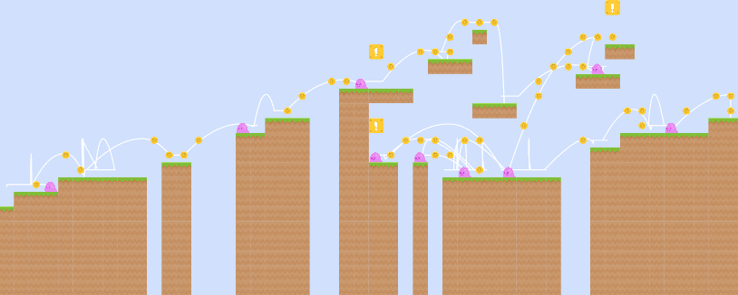
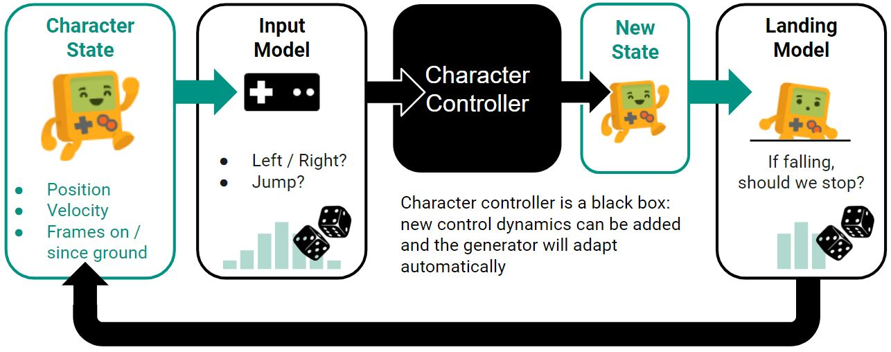
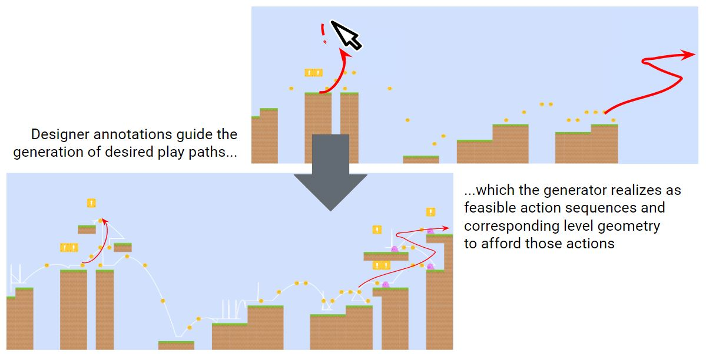
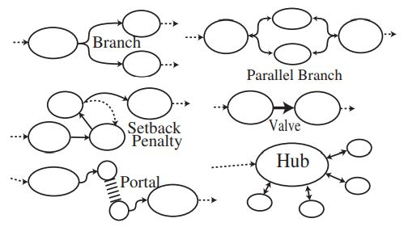

Path-First Platformer Generation
Using simulated gameplay traces as foundations for level generation.

Abstract
Methods for procedural generation of game levels frequently demand bespoke code or complex and unintuitive
parameters to control the style of gameplay, demanding both technical expertise outside a typical game designer or
level designer's skill set, and level design savvy outside a typical programmer's.
We present a "path-first" approach to level generation in the context of a 2D platformer game, designed
to address this issue. Configuring the generator is a matter of tuning a conventional character controller.
This controller is then used to generate simulated gameplay paths, which form the scaffold for the level
to be built. Because the level is generated from a feasible path, it gives strong guarantees of playability,
and affords intuitive means for designer editing.
Keywords
Procedural Content Generation, Video Games, Platformer, Play Traces, Markov Chain
1. Introduction
Procedural content generation for games (PCG) offers the tantalizing promise of extended replayability and novelty
in games by creating never-before-seen gameplay content on demand, and of speeding and easing development
by sharing workload between content creators and the algorithm in a co-creative fashion.
It is a form of generative art that grapples with the challenge of producing artifacts
that not only exhibit the visual or stylistic form of human-designed game content such as levels,
but also support the function of play. For a side-scrolling platformer game,
this means it must be possible for a player to navigate their character from their spawn point in the level
to the goal or exit, using only the moves permitted by the game's physics model (eg. running and jumping).
Models of possible player paths (or "play traces") representing such a journey through a level have
long been applied to address this challenge. Most prominently in the form of graph search algorithms like
A*
to check for a feasible path, either...
- during generation, to accept or reject whole levels or incremental additions
based on playability or difficulty, as estimated by the window of feasible paths it affords,
- or as a post-process, to correct a completed level,
adding potential paths where they are missing.
In these conventional uses, the level geometry is at least tentatively chosen first,
then a path is sought to solve it. This demands the use of complex rules to suggest the initial placements.
It takes a rare mix of level design and programming skills to craft such rules, or a large corpus of similar levels
to train a machine learning model to infer them, adding to the difficulty of applying these techniques to new games.
In this paper, we take the opposite approach by putting the play path first.
Using the game's own physics model and character controller, which designers are already accustomed
to tuning, we can simulate possible trajectories that a player character can follow. Coupled
with intuitive parameters for the frequency of jumps, drops, and direction changes, we demonstrate the generation of
plausible play traces with a controllable style and rhythm. Simple book-keeping helps us avoid
creating contradictory and unplayable paths. With such a path in hand, we can proceed to populate the level
with tiles that support that path (solid floor where the player needs to stand or walk,
open air where they need to jump or fall) and embellish it with relevant details (like
coins and power-ups where the player can reach them, or enemies where the player can fight them).
2. Related Works
Compton and Mateas proposed the use of player jumping paths in a platformer to estimate the difficulty of a particular
platform placement — depending on how narrow or exacting the set of viable jumps from one platform to the next may be.
This allows the use of a hill-climbing algorithm to vary platform placement in order to achieve a target difficulty.
The mixed initiative level editor Tanagra by Smith et al. demonstrated the power of using a player journey through
a level as the backbone of a generative system: it conceives of gameplay as a timeline of gameplay "beats" of a single jump or
other action, which could then be afforded by algorithmically selecting and modifying a small building block of level geometry.
The strict timeline approach has limitations, however — play in a Tanagra
level can only proceed left to right, and it has no means to support branching paths since there is only one timeline.
Teaching the tool new building block tricks also requires authoring complex constraint satisfaction rules that are unfamiliar to
most game and level designers.
Outside of academia, commercial games like
Cloudberry Kingdom And
Sure Footing
also employ path-based techniques, tasking an AI player to play the level so far and accept or reject the latest block placement
based on whether a feasible path can be found to reach it. But configuring the initial selection can be deeply unintuitive.
In the words of Cloudberry Kingdom developer Jordan Fisher, "There are hundreds of parameters buried in the depths of the algorithm...a seething,
chaotic pool of coupled variables. I no longer have any idea exactly how changes to them will manifest in the final product."
Taming such a complex problem can take years of development.
Procedural Content Generation via Machine Learning (PCGML) approaches aim to reduce the complexity of devising
and tuning such placement rules, by learning them from examples instead. Here too, paths turn out to be crucial:
Summerville and Mateas demonstrated that by annotating level examples with player path information — marking
tiles the player character occupies at some frame during a playthrough — they could significantly improve
the playability of the output .
They have demonstrated this can work with both AI-generated paths and those recorded from human gameplay,
and that varying the path data can offer a means to tune the style and personality of the resulting levels
. However, the sequential scanning model they employed faces similar
challenges as Tanagra in that it bakes-in a left-to-right progression of play.
More recently, Sorochan et al. have demonstrated the potential to first generate human-like play paths for the game
Lode Runner as their own artifact,
without initially committing to any level geometry at all, and then following up by generating level content that supports
that path. The researchers find that this helps to create more
coherent levels, and speculate that this technique may support greater control over the generator output.
In this paper, we use a similar concept as Sorochan et al., applied to the physics model of a 2D platformer,
and explore this promising potential. Our proposed method overcomes the limitations of previous works that
were limited to single left-to-right traversal, supporting levels that include backtracking or multiple solution
paths. And we ensure that it is easy and intuitive for game programmers and designers to configure, without demanding a large training corpus.
3. Method
Our proposed method works by using the game's own character controller and physics simulation to drive the generation of
a simulated player path through a level. Once this path has been generated, it's a comparatively easy task to populate the level
with tile geometry that affords this path.

A strength of this approach is that the game's character controller and physics simulation remain a "black box" to the generator routine.
Changing the game's underlying physics or gameplay tuning will automatically adapt the generator's output to match, so designers can tune
the generator using the tuning process they already use for character physics. This also allows the same generator to build playable levels for a
variety of characters with different game feel or move sets.
3.1 Character Control Model
We begin with the physics model and character control logic of the target game. For a platformer,
this will typically include parameters relating to the gravity, the character's speed, their
jump height, etc., which a game designer will tune to achieve their target game feel.
Below, we present an interactive example of such a model. Play with the sliders to see
how the settings change the shapes of the character's possible jump arcs, including...
- running jump: jump while running right at max speed, holding right for the full duration.
- stalling jump: jump while running right at max speed, then release the button to slow in mid air.
- turnaround jump: jump while running right at max speed, then hold left to try to turn around in mid air.
- standing jump: jump while stationary, then hold right to accelerate in mid air.
The character control model takes in a source state S representing the character's
current position and momentum, and an input state I representing the controls currently
pressed by the player. It then produces a new state S' that is the resulting state of
the character after one game frame's worth of simulation.
We augment the character state S with some counters tracking the number of frames
spent consecutively on the ground or in the air. This is already used in many games to
implement features like "coyote time" (a grace period where players may still jump even
if they've run off the edge of a platform), and gives us tools to control the rhythm
of the generated paths. We also add a "facing" property (again, used in games to select
an appropriate idle sprite when coming to a stop after moving left or right) which helps
generate paths with a suggestion of "intentional" flow, rather than excessive hesitation
and backtracking.
3.2 Generating Paths
In the version we present here, paths are generated using a kind of
Markov chain,
where a given character state S is mapped to a probability distribution of possible input states
I that the simulated player could press next, according to designer-tunable parameters:
- Time between jumps / drops:
a minimum and maximum bound on how long the player can stay on one platform,
helping to control the typical lengths of platforms.
- Backtrack probability:
how likely the simulated player will change direction and travel right-to-left.
- Height variance:
looking at a typical jump's eventual landing point, how far should it climb above or fall below its starting height?
Beginning with a starting character state S on the left side of the map (stationary, facing right, at a random elevation),
we select our next input state I using this probability distribution, and then run
these through the character controller model to produce our new state S', and repeat.
When the new state is falling (velocity points downward), our generator can additionally decide whether
to intervene and transition back to a standing state, according to the height variance parameter.
If so, it asks the game's physics to simulate collision with the ground, snapping the output state to the tile
boundary above the hypothetical collided surface. It always does this if the player has fallen into the
bottom row of the map, to ensure the generated path never goes out of bounds by falling into a pit.
The top/left/right edges of the map are treated as solid obstacles, so that the character controller won't
take the play path out of bounds in those directions.
To avoid contradictions that lead to unplayable paths, the generator does some book-keeping as it goes.
Any time a state requires that the player be on the ground, it marks the tile below them as "solid", to
ensure later parts of the path don't attempt to pass through this space. It also marks the set of tiles
that the player sprite occupies in any state along the way as "reserved". If a later step contemplates marking
one of these "reserved" tiles as "solid", it can recognize that this space is already claimed as empty traversable
space, and allow the player to fall through it instead.
This process is repeated until the path reaches all the way to the right side of the map.
In the event that the Markov chain gets stuck in a situation where there is no allowed input state for
the current character state, or where it has meandered excessively without reaching the right side,
the path is simply aborted and re-tried from scratch. Experimentally, setting a max of
30-50 retries is sufficient to reach a successful path with high probability.
Try playing with the parameters below, and observe how changing both the character control model
and the path tuning parameters changes the personality of the resulting paths to the end.
Click the map to re-generate with the same parameters.
▀ "solid" tile reservation
× tile reserved for player path
— path attempt failed
At present, these path parameters are applied globally. But one could also vary these parameters
over the course of a level, either following designer-painted "gameplay style regions", or direction
from a higher-level generator in the pipeline.
3.3 Skinning Paths
The final step is to turn these path annotations into fully realized map tiles.
In the current model, we do this by iterating over the tiles of the book-keeping map laid
down by the preceding pass, and applying simple heuristics:
- A tile that was marked as solid is filled in with a "dirt" tile.
- If this solid tile has no book-keeping annotations below it, we fill the entire column downward from that tile to form a plateau.
- If there's room to extend this platform one tile further to the left or right without interfering with any book-keeping notes,
we do so with a designer-controllable probability. This helps reduce single-tile platforms and overly exacting jumps.
- If there's a sufficient gap of empty space above a solid tile (that's not reserved as space a player may need to jump through),
we can choose to place a power-up box in that position, again with a designer-controlled probability.
(This can fill in for a dirt tile we would have otherwise placed to fill a solid reservation)
- Reservations along the ground or long jump paths can be filled in with coins, with designer-controlled probability.
- Solid tiles away from the starting location, with enough free space above to stomp on them, can be places
to station an enemy, with designer-controlled probability.
These heuristics are crude, but sufficient to demonstrate visually plausible levels that maintain the
generated paths' playability guarantees. In future, we would like to investigate using a 2-dimensional Markov
chain as in Sorochan et al.'s work with Lode Runner,
or a Wave Function Collapse
-based generator to allow more nuanced and stylistic translation of the path annotations into level geometry,
and to afford data-driven definitions of different platform styles to mix and match in a level,
rather than hard-coded heuristics.
4. Results
Below, you can play with a generator that includes the full end-to-end process. Click on the map to re-skin
the same path with fresh random rolls, or click the "New Path" button to generate a fresh path using the parameters
chosen in the interactive figures above.
For a future version of this paper, we would like to include a playable demo, so that
a reader will be able to evaluate the feeling of playing these generated levels for themselves.
5. Limitations and Future Work
While Markov chain path generation gives an interesting variety to the levels, it can be hit and miss,
requiring lots of aimless repetition before reaching a success, and producing some plain or strange levels.
In future, we would like to investigate using a more directed path search, possibly using a model trained
on human input as in the work of Summerville et al.,
or a variant on A*
for goal-seeking paths.
The ability to generate a path toward a specific destination offers some exciting possibilities.
In a mixed initiative context like the Tanagra level editor,
a level designer could sketch a rough gesture for how the player should move through the space, and the generator
could respond by offering viable gameplay paths (and supporting geometry) that deliver on this direction. The designer could
then erase some parts of the level and ask the algorithm to re-connect the separated parts, or create an
alternate path between two already connected parts. A level designer may even be able to select and move
parts of the path level geometry, with the algorithm able to infer how the pathing and supporting geometry
will need to change as a result. In this way, the path-first model could facilitate
a very high-level and intuitive form of collaboration with the machine to speed creation.


"Cell Structures" as proposed in "Procedural Level Design for Platform Games".
These same concepts could also be used by a higher-level generator, laying down broad schemes for
how the level graph should flow, according to a design pattern repertoire such as Compton and Mateas's
"Cell Structures" , then delegating to
the path generator to realize each node and edge of this graph in actual gameplay space.
There is also a great deal of room to explore ways of varying the style of the generated level,
such as by moving between different "registers" of path parameters and skinning palettes, as suggested by
Dormans .
Replacing the hard-coded heuristics of the current level skinning tool with a
data-driven generator to allow level designers to art direct levels or
parts of levels just by providing a small example of the styles they want to use.
Lastly, we believe this approach to generation can have applications outside the context of 2D
side-scrolling platformer games. There's no reason that the character control model needs to be limited to
running and jumping, and so games with more diverse palettes of actions could also find use for this
approach to procedural generation.